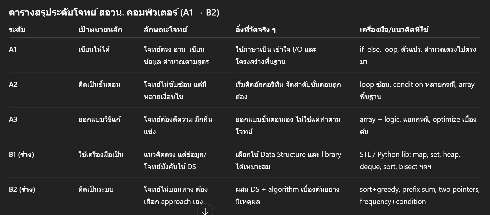

จาก A1 A2 A3 ไปสู่ B1 B2: เมื่อ TOI Zero ต้องยกระดับจากการเขียนโค้ดพื้นฐานไปสู่การคิดเป็นระบบ
{kind=link}

บทความนี้อธิบายแนวคิดการยกระดับโจทย์ของ TOI Zero จาก A1 A2 A3 ไปสู่ B1 B2 อย่างเป็นระบบ โดยเริ่มจากการทบทวนว่าระดับ A เดิมถูกออกแบบมาเพื่อให้นักเรียน เขียนโปรแกรมได้จริง และมีพื้นฐานการคิดเชิงขั้นตอนที่มั่นคงก่อนเข้าสู่ค่าย 1
เมื่อถึงจุดที่นักเรียนผ่านข้อเขียนและเริ่มคุ้นเคยกับ National Grader แล้ว ผู้เขียนมองว่าควรมีระดับโจทย์ใหม่ที่เหมาะกับสถานะของผู้เรียนกลุ่มนี้ เพื่อพัฒนาไปสู่ความสามารถที่สูงขึ้นโดยยังอยู่ในระบบการฝึกเดิม
นิยามของระดับ A1 A2 A3 ในโพสต์นี้ชัดมาก: A1 เน้น input-output และ if-else/loop ตรงไปตรงมา, A2 เริ่มมีหลายเงื่อนไขและต้องจัดลำดับขั้นตอนดีขึ้น, ส่วน A3 ต้องตีความและออกแบบขั้นตอนเองมากขึ้น แต่ทั้งหมดนี้ยังอยู่ในกรอบของการฝึกพื้นฐานการเขียนโค้ดและการคิดเชิงขั้นตอน
B1 คือ data structure literacy ไม่ใช่แค่เขียนโค้ดให้ทำงานได้
ระดับ B1 ถูกเสนอให้เป็นโจทย์ที่แก้ได้ทันต่อเมื่อผู้เรียนรู้จักเลือกใช้ C++ STL หรือ Python standard library ให้เหมาะกับปัญหา แนวคิดยังตรงไปตรงมา แต่ถ้าใช้ array และ loop แบบเดิม โค้ดมักจะยาวเกินไป จัดการยาก หรือไม่ผ่าน time limit
มุมนี้ทำให้ B1 กลายเป็นตัววัดใหม่ว่า นักเรียนไม่ได้เพียงเขียนโค้ดเป็น แต่เริ่มเข้าใจพฤติกรรมของโครงสร้างข้อมูล เวลาในการทำงาน และรู้จักใช้เครื่องมือมาตรฐานอย่างมีเหตุผล
B2 วัดว่าคิดเป็นระบบจริงหรือยัง
ส่วน B2 คือระดับที่ผู้ทำต้องเลือกแนวคิดและโครงสร้างข้อมูลด้วยตัวเอง โจทย์ไม่บอกวิธีแก้ brute force ตรง ๆ มักไม่พอ และผู้ทำต้องจัดระบบวิธีคิดให้ชัด ไม่ว่าจะเป็น greedy, prefix sum, two pointers หรือการประมวลผลหลังจัดลำดับข้อมูล
ผู้เขียนจึงสรุปได้คมว่า B2 ไม่ได้แค่ยากขึ้น แต่มีไว้เพื่อวัดว่า นักเรียนสามารถ คิดเป็นระบบ ได้จริงหรือยัง ซึ่งเป็นการเปลี่ยนจุดเน้นจากการเรียกใช้ library ไปสู่การออกแบบ algorithmic pattern
นี่เป็นเพียงแนวคิดตั้งต้น แต่สะท้อนวิธีคิดเชิงระบบต่อการพัฒนา talent
ตอนท้าย ผู้เขียนย้ำว่านี่เป็นเพียง แนวคิดตั้งต้น ที่เปิดให้ครู นักเรียน และผู้เกี่ยวข้องร่วมกันวิจารณ์ต่อ ไม่ใช่ประกาศทางการ มุมนี้สำคัญเพราะสะท้อนวิธีคิดที่ใช้การออกแบบระดับความยากอย่างมีเป้าหมาย แทนการทำโจทย์ให้ยากขึ้นแบบไร้ทิศทาง
บทความนี้จึงเป็นตัวอย่างที่ดีของการพัฒนา talent แบบจริงจัง: ไม่เพียงสร้างสนามฝึก แต่ยังออกแบบ ลำดับการเติบโตของความสามารถ ให้สอดคล้องกับสถานะของผู้เรียนแต่ละช่วง